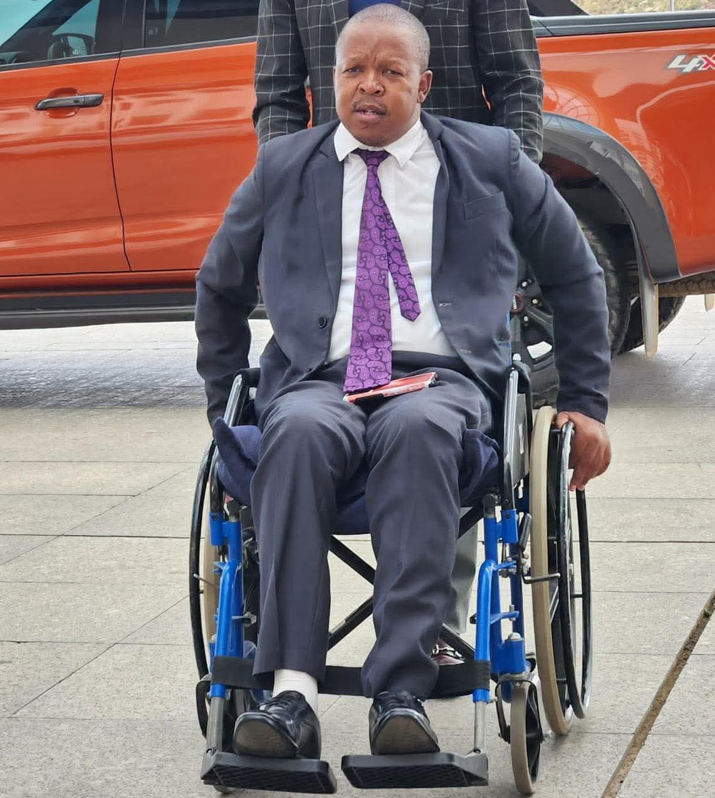

Honourable Pitso Lesaoana makes it to the top with his disability
By Boitelo Ratsolo | Published March 2026
In a world that often measures worth by ability, individuals with disabilities continually challenge societal norms, withdrawing from spaces of empowerment and advocacy. Among these minority souls is Pitso Lesaoana whose journey embodies courage, resilience and pursuit of inclusion. His journey further tells of how he achieved his current position in the parliament even through discrimination and exclusion. Lesaoana, a 49 year old parliamentarian from Maphotong Roma, is not defined by the limitations imposed by society but the boundless potential within him. Despite being involved in a car accident and being paralysed at a young age of 28, Lesaoana did not stop pursuing his dream of being in the parliament and helping Basotho. “Being in car accident was hard on its own but discovering that will not be able to walk for the rest of my life made things worse. By then, I thought my dreams were over but with the support from my family and friends, I saw the importance of living and found reasons to live with my disability.” Said Lesaoana. He transformed these obstacles into opportunities, becoming a beacon of inspiration for many. Navigating daily life, Lesaoana confronts not only physical barriers but also extensive attitudes that often marginalize disabled individuals. After being appointed as minister gender, youth and social development he has been a voice for all disabled people , from inaccessible infrastructure to stigmatizing perception he said “ the journey is fraught with hurdles however, I refuse to be defined by these limitations I choose instead to advocate for change and challenge misconceptions. As a member of both disabled and minority communities, Lesaoana embodies intersectionality. He does not only confront ableism but also the complexities of identity weaving together narratives of resilience and solidarity. Through his activism, Lesaoana sheds light on the unique challenges faced by disabled minorities, fostering dialogue and a more inclusive society. Through his work as a minister, he has called for social gathering in different district where he donates food and clothes for his fellow individuals. Beyond his individual achievements, Lesaoana serves as a source of empowerment for countless others. Through his platforms on social media, he amplifies voices often silenced by society, fostering a sense of community and belonging. He has been supporting an event celebrating World Disability Day which is on the 6th of December yearly. His story resonates far beyond Roma, inspiring individuals worldwide to embrace their differences and pursue their dreams unapologetically. However, the journey towards inclusion is far from over. Lesaoana’s story serves as a poignant reminder to the government and society, of the work that remains to be done. From advocating for policy reform to challenging ingrained biases, the path towards a truly inclusive society requires collective effort unwavering determination. He has pleaded of vulnerable people like him to work together in order to fight through this journey of exclusiveness. Lesaoana also strives for the occupation of disabled people in public spaces, more buildings and transportation systems as the public has been denying them their rights. “Through my experience working with disabled people including myself, I have seen the difficulties disabled people face in public spaces, from discrimination to denial of their rights and that is very heartbreaking because I know how it feels to be treated as an exclusion and being treated differently in public transports.” Said Lesaoana. In a society striving for progress, Lesaoana stands as a testament to the power of resilience, challenging us to see beyond limitations and embrace the infinite possibilities within each individual. “ One day, I hope to see all disabled people feeling included in every societal improvements and knowing their worth as individuals.’’ As we journey forward, may his story serve as guiding light, illuminating the path towards a world where inclusion knows no bounds. In his story, we find not just a story of struggle, but one of resilience, triumph and hope. He embodies the spirit of defiance against the world that seeks to confine diversity within narrow confines. We are also reminded that true strength lies not in conformity but in embracing the richness of human diversity.
This deep dive explores how disabled people can survive regardless of their situation .
Key Takeaways
- Increased mobile news consumption.
- The rise of citizen journalism.
- Importance of verification and ethics.